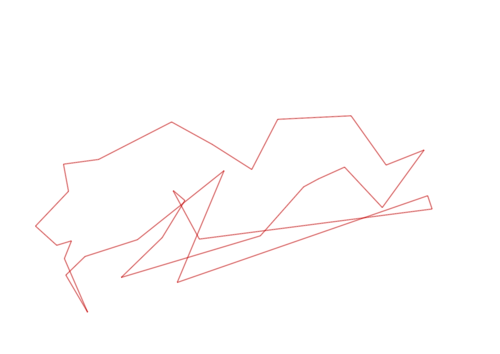
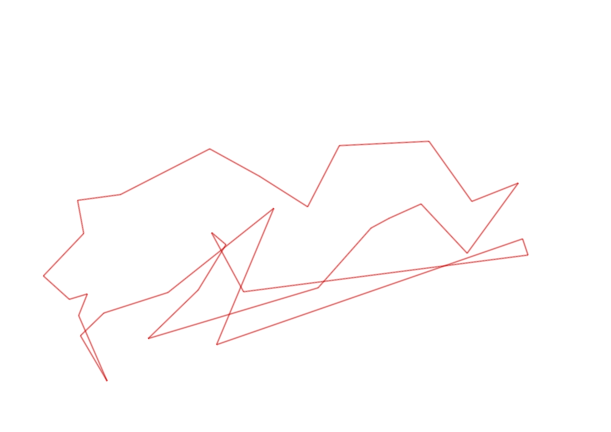

| Control |
Points |
Time Punched |
Distance |
Your Time |
Pace |
Place |
Fastest Time |
Median Time |
% Behind Fastest |
| 42 |
40 |
|
0.23 |
0:02:11 |
09:29 |
2 / 2 |
0:01:59 |
0:02:05 |
10% |
| 75 |
70 |
|
1.0 |
0:08:13 |
08:13 |
1 / 1 |
0:08:13 |
0:08:13 |
0% |
| 56 |
50 |
|
0.06 |
0:04:20 |
1:12:13 |
8 / 8 |
0:00:25 |
0:00:39 |
940% |
| 61 |
60 |
|
1.12 |
0:28:26 |
25:23 |
1 / 1 |
0:28:26 |
0:28:26 |
0% |
| 92 |
90 |
|
0.51 |
0:03:32 |
06:55 |
1 / 1 |
0:03:32 |
0:03:32 |
0% |
| 60 |
60 |
|
0.47 |
-1 day, 23:14:52 |
49:27:48 |
1 / 1 |
-1 day, 23:14:52 |
-1 day, 23:14:52 |
0% |
| 41 |
40 |
|
0.23 |
0:01:47 |
07:45 |
3 / 7 |
0:01:41 |
0:01:52 |
5% |
| 40 |
40 |
|
0.11 |
0:00:58 |
08:47 |
10 / 24 |
0:00:45 |
0:01:00 |
28% |
| 77 |
70 |
|
0.18 |
0:01:49 |
10:05 |
5 / 21 |
0:01:35 |
0:02:21 |
14% |
| 71 |
70 |
|
0.25 |
0:03:23 |
13:32 |
2 / 2 |
0:03:06 |
0:03:14 |
9% |
| 54 |
50 |
|
0.08 |
0:01:32 |
19:10 |
32 / 33 |
0:00:27 |
0:00:45 |
240% |
| 69 |
60 |
|
0.07 |
0:01:30 |
21:25 |
6 / 20 |
0:01:00 |
0:01:56 |
50% |
| 53 |
50 |
|
0.12 |
0:01:21 |
11:15 |
2 / 26 |
0:01:16 |
0:01:51 |
6% |
| 44 |
40 |
|
0.2 |
0:01:10 |
05:50 |
5 / 22 |
0:00:39 |
0:01:40 |
79% |
| 32 |
30 |
|
0.12 |
0:00:52 |
07:13 |
3 / 22 |
0:00:43 |
0:01:19 |
20% |
| 63 |
60 |
|
0.15 |
0:01:08 |
07:33 |
2 / 25 |
0:01:05 |
0:01:29 |
4% |
| 107 |
100 |
|
0.35 |
0:02:37 |
07:28 |
3 / 22 |
0:02:14 |
0:03:49 |
17% |
| 57 |
50 |
|
0.2 |
0:01:54 |
09:30 |
1 / 22 |
0:01:54 |
0:03:53 |
0% |
| 47 |
40 |
|
0.2 |
0:06:19 |
31:35 |
1 / 1 |
0:06:19 |
0:06:19 |
0% |
| 123 |
20 |
|
0.24 |
0:02:27 |
10:12 |
2 / 5 |
0:02:23 |
0:02:41 |
2% |
| 109 |
100 |
|
0.31 |
0:02:24 |
07:44 |
3 / 7 |
0:02:09 |
0:02:32 |
11% |
| 52 |
50 |
|
0.26 |
0:02:33 |
09:48 |
4 / 6 |
0:02:01 |
0:02:27 |
26% |
| 81 |
80 |
|
0.17 |
0:01:43 |
10:05 |
2 / 4 |
0:01:42 |
0:01:44 |
0% |
| 46 |
40 |
|
0.3 |
0:03:19 |
11:03 |
1 / 1 |
0:03:19 |
0:03:19 |
0% |
| 49 |
40 |
|
0.23 |
0:01:57 |
08:28 |
2 / 6 |
0:01:50 |
0:02:11 |
6% |
| 64 |
60 |
|
0.12 |
0:00:53 |
07:21 |
1 / 8 |
0:00:53 |
0:00:55 |
0% |
| 48 |
40 |
|
0.07 |
0:00:38 |
09:02 |
3 / 9 |
0:00:34 |
0:00:47 |
11% |
| 37 |
30 |
|
0.28 |
0:03:12 |
11:25 |
1 / 4 |
0:03:12 |
0:03:43 |
0% |
| 59 |
50 |
|
0.62 |
0:08:01 |
12:55 |
1 / 1 |
0:08:01 |
0:08:01 |
0% |
| 38 |
30 |
|
0.24 |
0:02:28 |
10:16 |
1 / 2 |
0:02:28 |
0:04:08 |
0% |
| 127 |
20 |
|
0.18 |
0:01:41 |
09:21 |
1 / 3 |
0:01:41 |
0:02:33 |
0% |
| Finish |
0 |
|
0.06 |
0:00:22 |
06:06 |
2 / 8 |
-1 day, 23:05:57 |
0:00:35 |
-99% |
Total Distance Covered: 8.73km
Points Scored: 1630
Late Penalty: 0
Final Score: 1630
Total Time: 0hours 59minutes 32seconds
Efficiency: 186.71 points/km
 
